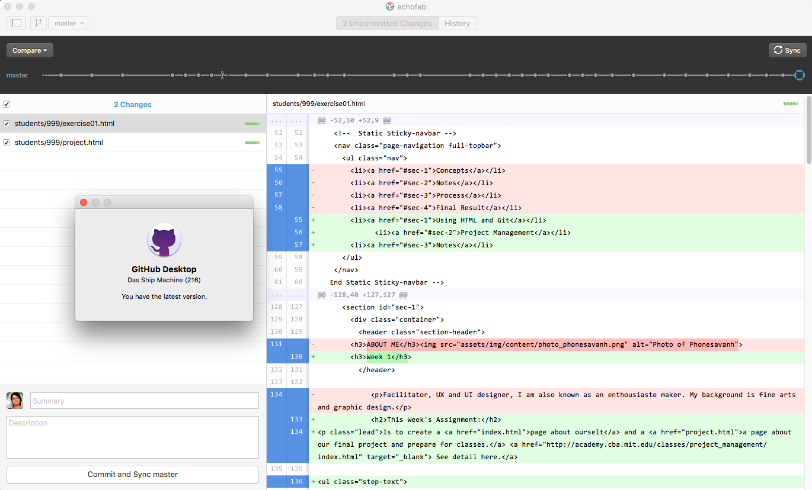
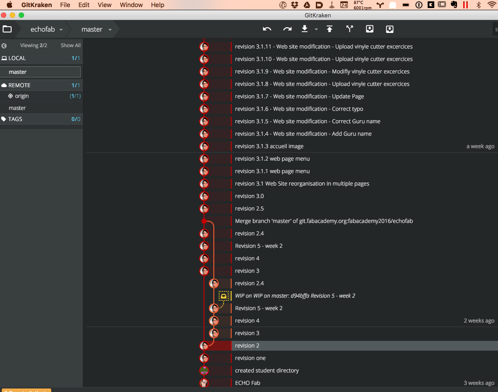

Principles and Practices
Project Management
This Week's Assignment:
Is to create a page about ourself and a a page about our final project and prepare for classes. See detail here.
Set up a Git repository and choosing a html application
Make a project planning for final project
Plan for fab Academy classes
Git repository
I have set up a git repesitory on http://git.fabacademy.org. My user name is phonesavanht so my link is http://git.fabacademy.org/u/phonesavanht. I notice we are using gitlab.com (vs the known github.com server) for the Fab Academy project. I used David's work to understand what I was suppose to do to clone, pull and push off my student remote repository using these commands :
git clone git@git.fabacademy.org:fabacademy2016/echofab.git
git pull git@git.fabacademy.org:fabacademy2016/echofab.git
git push git@git.fabacademy.org:fabacademy2016/echofab.git
Unfortunately I was not able to push my files to my student folder, below is my error message:
GitLab: You are not allowed to push code to this project.
fatal: Could not read from remote repository.
Please make sure you have the correct access rights
and the repository exists.
My instructor and guru, Terence Fagan fixed it the next day (February 4th 2016).
Generating SSH key made a nice image
+---[RSA 2048]----+ | = | | + O | | .. o B . | |.o++ + o | |o.+=.. .So | |oo+++ .. . | |o+o= o ++. . | |. + o *=+o. | |.E *o +o. | +----[SHA256]-----+
Before I could connect to the remote server I had to create a SSH key, it also made a beautiful drawing shown above.
I used the terminal to set up my account, cloned, pulled and pushed my stedent files and afterwords used a more convenient app for Mac such as git hub Desktop.  There is also more choice here. Today, February 23th, I tried another git application called GitKraken and I could see my attempt using the terminal to change the comit comment I used tree weeks ago. I wrotte randomly revision one,2, 3 etc, each time I made a revision on my files. As I was listening and review tutorial on using git, I learned that commenting and weel tagged comit was good practice so that when looking fo changes in the history we can more easily find it. You can visually see change below. So after revision 5 on week two, I decided to name my revision like this : week 2 = revision 2. All minor change in that week would be 2.1.1 for exemple. And each bigger element add in that week would be 2.2! 
HTML and web site
I use Bootsrapp library and theme for my website. Simple and easy to integrate. I am used to Bracket and Dreamweaver for coding so I sticked with it.
Project Management
Testing multiple application
Comming soon...
Preparing for class
Setting up conference room
February 24th, 2016 - As I am writting this, it is now in the fourth week in the program. It all started with a really hard with struggling to connect to the Fab Academy conference room from our fab lab. I tried all the software on mac and Ubuntu. Following instruction in the hanbook and help with Guru in fab lab Beach Lab, I kept having error message such as port 5060 is not opened. I tried other port too and with no access to manage the router, I tried the Polycom app on iPad, also without success. To my surprise, when I was back to the country house, all application worked! Linphone and polycom on both Ubuntu, Mac and IOS, so it was definitly the setting in the fab lab. testing my connection and choosing room 1 from the conférence room list I notice seeing the lab, I realisez I was connected to the same network where we see all the other labs. Back to the Fab Lab, I use jabber video conference and loggin used for the lab to connect. I was happy. Today I am out of the lab and am not abble to connect, thus having time to log what happened then and other experience of the first week of the Academy. If someone reading this knows what could be the problem, please do not hesitate to writte to me.
Bellow my sip preference[sip]
media_encryption=srtp
default_proxy=-1
guess_hostname=1
contact="echoFab"